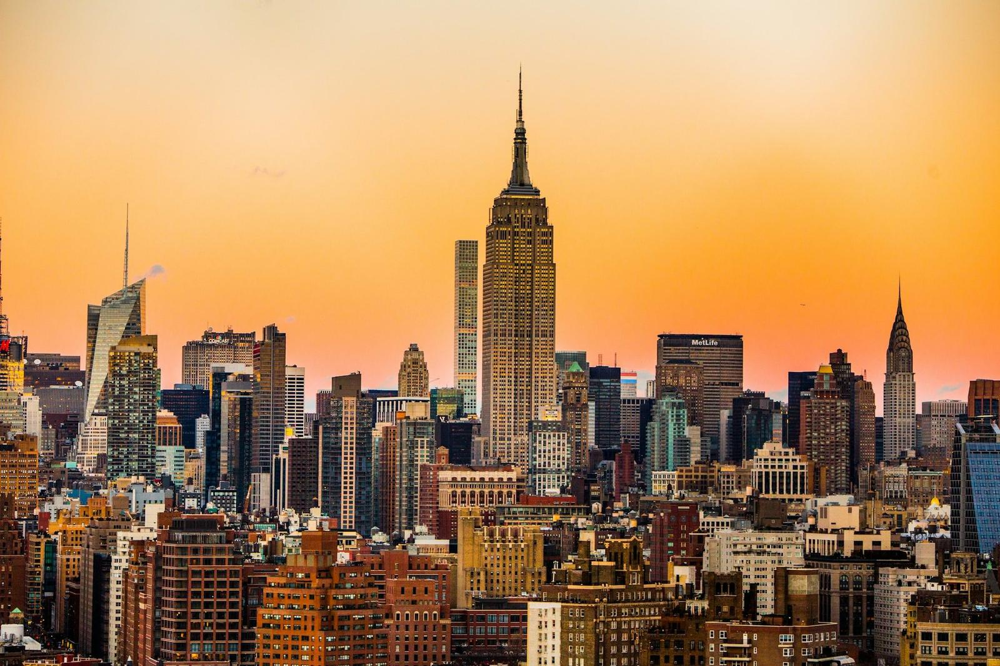

01
01
JAPAN — 日本
Kyoto
京都千年古都，四季分明。庙宇、町屋与苔庭构成一种缓慢的美学——旅行者唯一要做的事，是放慢脚步，等光线把檐角描一遍。
- 最佳季节春 3–4 月 · 秋 11 月
- 旅行方式步行 · 骑行 · 巴士
- 建议天数4–6 天
The Quiet Atlas
Destinations — 目的地
九个目的地，九种光。每个地方都值得用比打卡更多的时间去相处——慢下来，等光线把城市和山川重新描一遍。
01
JAPAN — 日本
千年古都，四季分明。庙宇、町屋与苔庭构成一种缓慢的美学——旅行者唯一要做的事，是放慢脚步，等光线把檐角描一遍。
 02
02
ICELAND — 冰岛
冰川、火山与瀑布同框的土地，像地球刚刚成形、还没来得及修饰的样子。
 03
03
SWITZERLAND — 瑞士
火车贴着山脊爬升，湖泊盛着雪线，徒步者在天光里小得像一个逗号。
 04
04
ITALY — 意大利
悬崖把彩色房子一层层叠进海里，柠檬香和九重葛一样浓。
 05
05
FRANCE — 法国
光的城市。清晨的塞纳河、黄昏的屋顶、夜里亮着灯的咖啡馆。

06 07
07
JAPAN — 日本
霓虹把夜色染成蓝紫，浅草的香火与涩谷的人潮只隔几站地铁。
 08
08
ITALY — 意大利
所有的路都通向桥，所有的桥都通向光——一座拒绝被「游览」的城市。
 09
09
GREECE — 希腊
白墙层层叠落，蓝顶教堂是爱琴海最安静的坐标，落日全世界最有名。